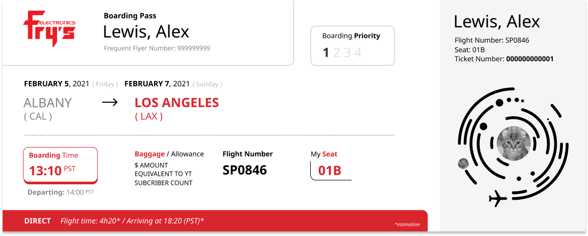
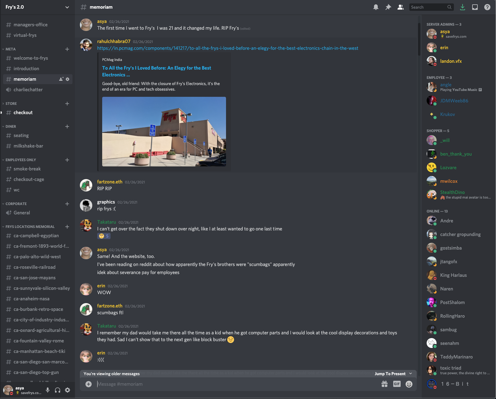
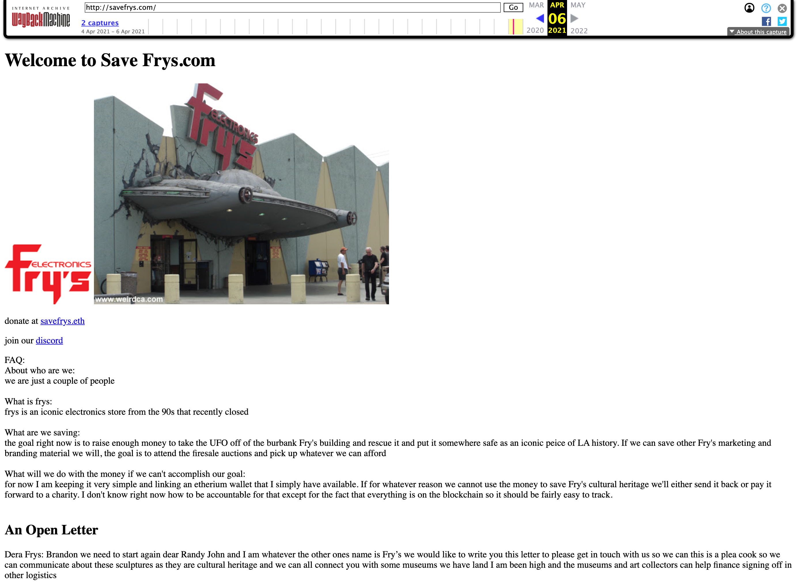
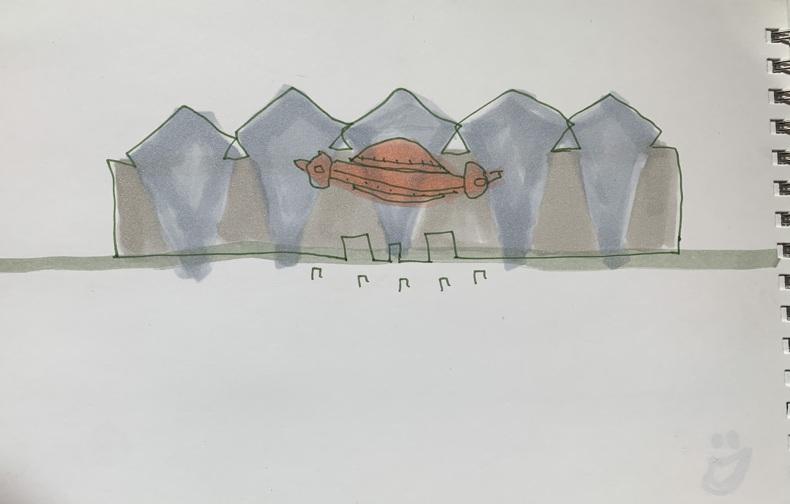

SaveFrys.com is a memorial website for the now shut down big box electronics retailer Fry's Electronics.
I have been interested in the memento mori concept for a while. In a way, I think that most of my work is "about" death in one way or another:
My name, Anastasia, means "resurrection", a concept which is one of the more traumatic responses to death
I feel incredibly defined creatively by my ADHD, which I believe was amplified by my mother's early death (I was only 2)
As a "bicultural" person (rather than immigrant), I always feel like I am mourning something from my "other" homeland whenever I am not present. All my favorite childhood environments are gone forever, and worse, the micro-cultures I've grown through are also constantly transforming and fading. As I move around various friendships and communities, industries and creative directions, every time I'm obsessed with something new I'm secretly mourning a huge loss.
My own Fry's story is surprisingly, not about childhood memories of my parents losing me in the vast aisles of the store. The first time I visited Fry's Electronics, I was 19, and learning how to fix and build computers. A friend of mine that I was learning from was excited to show me the store as I'd never heard of it before, so we drove to Burbank, store #11. The experience was mind-twisting. I still remember that day, what the sky looked like, what we bought (I still own the monitor I got that day – and the box, in case I'd ever want to return it), even the store layout that has since been rearranged several times.
Five years later I wanted to become that kind of teacher myself: so I made my little brother a fake gift card (Since you can't program a real gift card to be in the dollar amount equivalent to his YouTube subscriber count). He wanted to build his own computer for gaming, and I thought a trip to Store #11 would be the perfect Christmas gift for a 12 year old.

When we finally made it to the store, felt the smell of it's imminent demise. Surely, two weeks later, the sudden announcement came: Fry's Electronics is shutting down. After some collective mourning and grieving, I started thinking about how weird it is that the fun and excitement of shopping for electronics isn't present in e-commerce. Even with TikTok and Discord, it's just not the same. I decided to make a Discord server myself – to transform my grief into passion and energy to build something new and beautiful.
I was thinking about community shopping experiences on social platform: there are already a lot of cool Discord servers for buying electronics, like buildapc and StockDrops, so why not add one where I could recreate all the zany things I love about Fry's?

2D map idea
Why is the work urgent, necessary, relevant today?
Who is the ideal audience / what community is the project most accountable to?
rotating lighting up 3d UFO in newartcity or on savefrys.com to look like sunsetfootclinicsign.com
big piece of writing / manifesto / deathifesto
charlie chip discord bot
just better discord
music video to tegan and sara goodbye goodbye or similar
1-800 phone line and prerecorded message
tiktok videos that go viral
grocery store separators with savefrys website
save frys face filter
main memorial page + 2d map of #11 store. + WIP submissions page with are.na or sheets
This is the second screenshot of savefrys.com from archive.org. I'm really interested in making some sort of large scale image that could either be printed on stretched canvas, lenticular print, or projected onto the building after the UFO is demolished.
Questions and Concerns
Is a single website going to feel like "enough" or satisfying for this project?
What is the purpose of the actual objects I have bought?
What's an appropriate way to include my proclivity to performance in this?
Is using three.js going to be so annoying I fail?
Is Brutalist web design a good direction to take this project? I want it to look polished but also celebrates Web 1.0 aesthetics.
When building out the interactive memory-share part, is it OK to scrape my discord and the Fry's Employees FB group for submissions?
How much does drone video cost? Is it illegal to take HD video of the UFO?
Will I be able to do this in time before it's demolished?
Bibliography
Who wrote about the various concepts and questions at work in your project? What are the different points of view you’re considering?Gather as much research material related to your topic as possible. List your sources.
Process
Page 7+ - Process (2-5 pages) sketches, photographs of process, prototypes